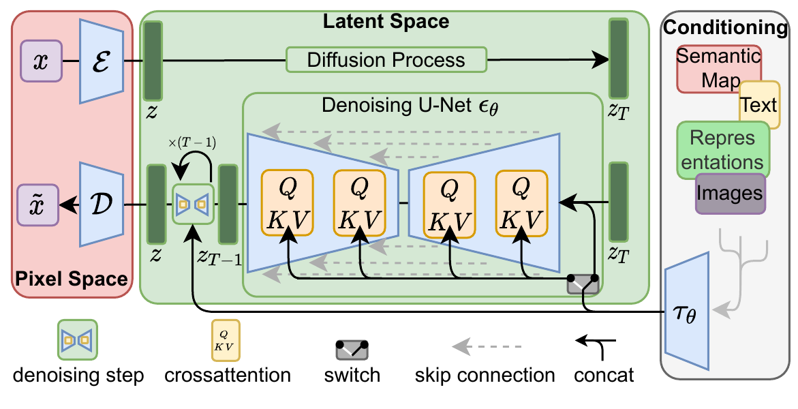
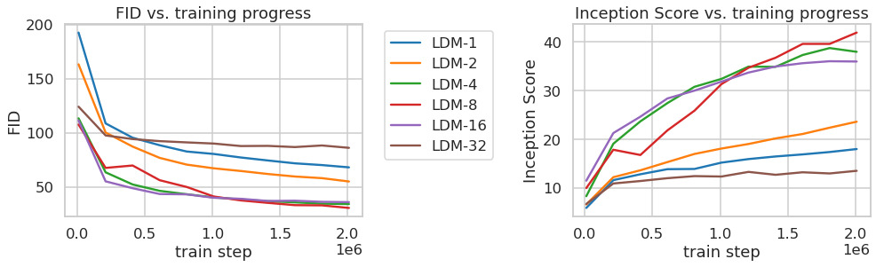
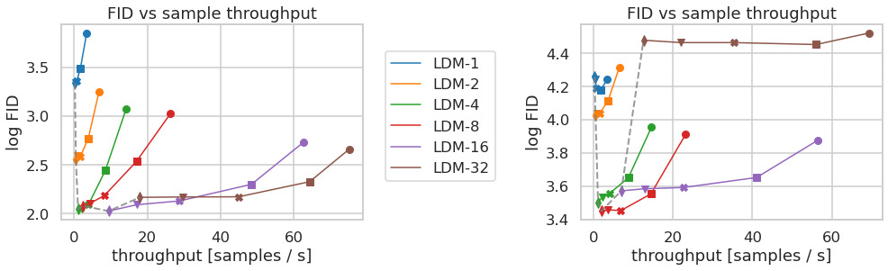
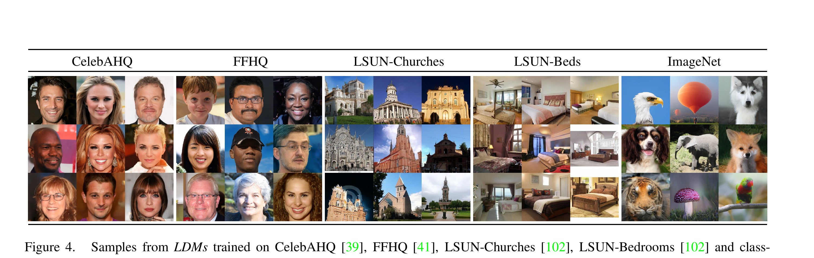
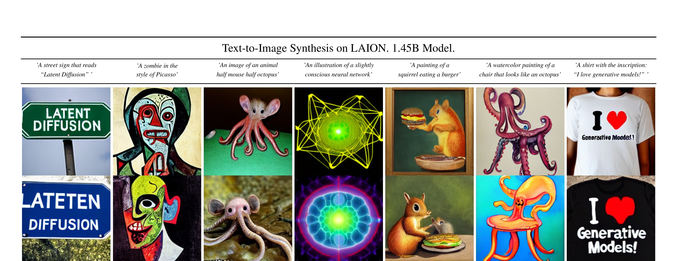
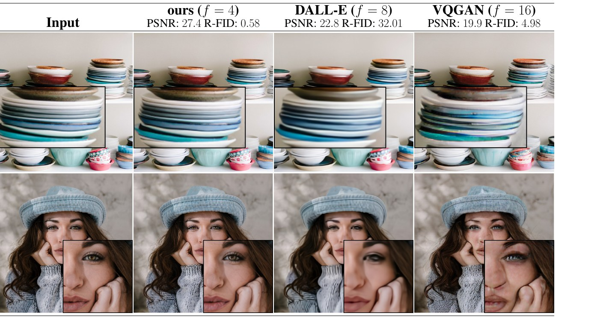

🎮 费曼一分钟（通俗速读）
以前的扩散模型（如 DDPM）直接在「像素世界」里反复擦噪点画图——一张 512×512 的图有 78 万个像素，每一步去噪都要在这么大的画布上算一遍，训练动辄几百张 GPU 卡跑上几周。本文（潜在扩散 LDM，也就是后来的 Stable Diffusion）的核心招数是：先把图压缩到一个小很多的「缩略草稿世界」里再画。
用《我的世界》打比方：与其在 1:1 实景里一格一格盖楼（贵且慢），不如先用一张缩小的「设计蓝图」（潜在空间 latent）来构思整体结构，画好之后再用一个固定的「自动建造机」（解码器 $\mathcal{D}$）把蓝图一次性还原成精细实景。蓝图只保留「有意义的语义」，扔掉人眼根本看不见的高频细节——这一步由一个自编码器预先训练好、且只训练一次就能反复复用。
四个核心概念：① 感知压缩（autoencoder $\mathcal{E},\mathcal{D}$，把图缩小 $f$ 倍到 latent）；② 潜在扩散（在小蓝图上跑 DDPM 式去噪 U-Net，便宜得多）；③ 交叉注意力条件控制（cross-attention，把文字/语义图/边框等任意条件「注入」U-Net，于是同一套机制能做文生图、超分、补全、布局生成）；④ 两阶段解耦（压缩与生成分开学，互不掣肘）。一句话：把「在哪画」从像素搬到 latent，既省算力又不掉画质，还顺手让扩散模型变成了万能的可控生成器。
🗺️ 一图看懂 LDM 全流程（自绘逻辑图）
flowchart LR
subgraph S1["阶段一：感知压缩（训练一次，可复用）"]
direction TB
X["图像 x
H×W×3"] -->|"编码器 𝓔"| Z["潜在 z
h×w×c，下采样 f 倍"]
Z -->|"解码器 𝓓"| XR["重建 x̃ ≈ x"]
REG["正则：KL-reg 或 VQ-reg
感知损失 + Patch 对抗损失"] -.约束.-> Z
end
subgraph S2["阶段二：潜在扩散（在小空间里学生成）"]
direction TB
Z2["z₀ = 𝓔(x)"] -->|"前向加噪 q（固定）"| ZT["z_T ≈ 高斯噪声"]
ZT -->|"去噪 U-Net ε_θ(z_t,t,τ(y))"| Z0["还原 ẑ₀"]
Y["条件 y
文本/语义图/边框/低分图"] -->|"领域编码器 τ_θ"| TAU["τ_θ(y)"]
TAU -->|"交叉注意力注入"| ZT
end
Z0 -->|"解码器 𝓓 单次前向"| OUT["生成图像 ~1024² px"]
style S1 fill:#e2d9f3,stroke:#6f42c1
style S2 fill:#cfe2ff,stroke:#0d6efd
style OUT fill:#fff3cd,stroke:#ffc107
Abstract
By decomposing the image formation process into a sequential application of denoising autoencoders, diffusion models (DMs) achieve state-of-the-art synthesis results on image data and beyond. However, since these models typically operate directly in pixel space, optimization of powerful DMs often consumes hundreds of GPU days and inference is expensive due to sequential evaluations. To enable DM training on limited computational resources while retaining their quality and flexibility, we apply them in the latent space of powerful pretrained autoencoders.
In contrast to previous work, training diffusion models on such a representation allows for the first time to reach a near-optimal point between complexity reduction and detail preservation, greatly boosting visual fidelity. By introducing cross-attention layers into the model architecture, we turn diffusion models into powerful and flexible generators for general conditioning inputs such as text or bounding boxes and high-resolution synthesis becomes possible in a convolutional manner. Our latent diffusion models (LDMs) achieve new state-of-the-art scores for image inpainting and class-conditional image synthesis and highly competitive performance on various tasks, while significantly reducing computational requirements compared to pixel-based DMs.
通过把图像生成过程分解为一系列去噪自编码器的依次作用，扩散模型（DMs）在图像乃至更广领域取得了当时最优的合成效果。然而，由于这类模型通常直接在像素空间中运作，强大 DM 的优化往往要耗费数百个 GPU 天，且因需顺序多步求值导致推理昂贵。为了在有限算力下训练 DM 同时保留其质量与灵活性，我们将其应用在强大的预训练自编码器的潜在空间中。
与以往工作不同，在这种表示上训练扩散模型首次实现了「复杂度削减」与「细节保留」之间的近最优平衡，大幅提升视觉保真度。通过在模型架构中引入交叉注意力层，我们把扩散模型变成了能处理文本、边界框等通用条件输入的强大而灵活的生成器，并使高分辨率合成能以卷积方式进行。我们的潜在扩散模型（LDM）在图像补全与类别条件生成上取得新的最优分数，在多种任务上表现极具竞争力，同时相较像素级 DM 显著降低算力需求。
段落功能
一句话点出痛点（像素空间 DM 太贵）与解法（搬到 latent 空间 + 交叉注意力），并预告 SOTA 结果。
逻辑角色
论证链起点：把「DM 强但贵」这一矛盾，用「降维 + 条件机制」一次性回应，奠定全文双主张（效率 + 通用可控）。
论证技巧 / 潜在漏洞
技巧：摘要同时锚定算力收益、理论平衡点与硬指标三重证据。漏洞：「near-optimal point」是定性表述，具体由 §4.1 的 $f$ 扫描实验支撑；摘要未量化提速倍数。
1. Introduction
Image synthesis is one of the computer vision fields with the most spectacular recent development, but also among those with the greatest computational demands. Recently, diffusion models, which are built from a hierarchy of denoising autoencoders, have shown to achieve impressive results in image synthesis and define the state-of-the-art in class-conditional image synthesis and super-resolution. Being likelihood-based models, they do not exhibit mode-collapse and training instabilities as GANs and, by heavily exploiting parameter sharing, they can model highly complex distributions without involving billions of parameters as in AR models.
图像合成是近来发展最瞩目、同时算力需求也最大的计算机视觉领域之一。近期，由一层层去噪自编码器堆叠而成的扩散模型，在图像合成上取得了惊艳效果，并在类别条件生成与超分辨率上确立了当时的最优水平。作为基于似然的模型，它们不像 GAN 那样出现模式坍塌与训练不稳定；并且通过大量参数共享，无需像自回归模型那样动用数十亿参数，就能建模极其复杂的分布。
段落功能
确立 DM 的优势地位（质量 SOTA、无模式坍塌），同时埋下「算力大」的伏笔。
逻辑角色
问题语境：既然 DM 这么强，那它的死穴是什么？为下一段「算力批判」铺垫。
论证技巧 / 潜在漏洞
技巧：先扬（对比 GAN/AR 的优点）后抑（引出成本），是经典的「价值—代价」叙事。
DMs belong to the class of likelihood-based models, whose mode-covering behavior makes them prone to spend excessive amounts of capacity (and thus compute) on modeling imperceptible details of the data. Training the most powerful DMs often takes hundreds of GPU days (e.g. 150–1000 V100 days), and repeated evaluations on a noisy version of the input space render also inference expensive, so that producing 50k samples takes approximately 5 days on a single A100 GPU. This has two consequences: training requires massive resources available only to a small fraction of the field and leaves a huge carbon footprint; and evaluating an already trained model is also expensive in time and memory.
DM 属于基于似然的模型，其「覆盖所有模式」的特性使它倾向于把过多容量（也即算力）耗费在建模那些人眼无法察觉的细节上。训练最强的 DM 往往要花数百 GPU 天（例如 150–1000 个 V100 天）；而在带噪输入空间上反复求值也使推理变得昂贵——在单张 A100 上生成 5 万张样本约需 5 天。这带来两个后果：其一，训练所需的庞大算力只有少数机构具备，且碳足迹巨大；其二，即便是评估一个已训练好的模型，在时间与显存上也代价不菲。
段落功能
用具体数字（数百 GPU 天、5 天 5 万样本）量化「DM 太贵」这一核心痛点，并归因于「在不可感知细节上浪费容量」。
逻辑角色
问题陈述：把成本拆成「训练贵」与「推理贵」两条线，正好对应后文 LDM 的两点收益。
论证技巧 / 潜在漏洞
技巧：「民主化高分辨率合成」的价值叙事（碳足迹、算力公平）增强动机说服力。这一「容量浪费」洞察直接继承自 DDPM 的 rate-distortion 分析。
Our approach starts with the analysis of already trained diffusion models in pixel space: learning can be roughly divided into two stages. First is a perceptual compression stage which removes high-frequency details but still learns little semantic variation. In the second stage, the actual generative model learns the semantic and conceptual composition of the data (semantic compression). We thus aim to first find a perceptually equivalent, but computationally more suitable space, in which we will train diffusion models for high-resolution image synthesis.
We separate training into two distinct phases: first, we train an autoencoder which provides a lower-dimensional representational space which is perceptually equivalent to the data space. Importantly, we do not need to rely on excessive spatial compression, as we train DMs in the learned latent space, which exhibits better scaling properties with respect to spatial dimensionality. We dub the resulting model class Latent Diffusion Models (LDMs). A notable advantage is that we need to train the universal autoencoding stage only once and can therefore reuse it for multiple DM trainings or for different tasks.
我们的方法从分析「已训练好的像素空间扩散模型」入手：其学习过程大致可分为两个阶段。第一阶段是感知压缩，去除高频细节，但几乎不学语义变化；第二阶段才是真正的生成模型学习数据的语义与概念构成（语义压缩）。因此我们的目标是：先找到一个在感知上等价、但在计算上更合适的空间，再在其中训练扩散模型做高分辨率合成。
我们把训练拆成两个清晰的阶段：首先训练一个自编码器，提供一个维度更低、且在感知上与数据空间等价的表示空间。关键在于——由于我们是在学到的潜在空间里训练 DM，而该空间在空间维度上具有更好的缩放特性，所以无需依赖过度的空间压缩。我们将由此得到的模型类称为「潜在扩散模型（LDM）」。一个显著优势是：通用的自编码阶段只需训练一次，便可被多次 DM 训练或不同任务复用。
方法动机
把生成学习显式拆成「感知压缩（扔细节）」+「语义压缩（学构图）」两阶段。既有 DM 把两件事混在一个昂贵的像素空间里同时做，这正是浪费所在。
设计取舍
与 VQGAN/VQ-VAE 这类「激进压缩到 1D 离散序列再用 AR 建模」的两阶段法相比：LDM 用温和压缩（保留 2D 结构），把更多担子留给生成式 U-Net，因而重建更保真、缩放更平滑。
逻辑角色
这是全文的「阿基米德支点」——一句「先压缩再生成」把摘要主张落到可执行的两阶段框架，后续 §3 全是对它的形式化与工程化。
感知压缩 vs 语义压缩（自绘示意）
📄 原文 Figure 2（p.2）：感知压缩 vs 语义压缩

In sum, our work makes the following contributions: (i) Our method scales more gracefully to higher dimensional data and can work on a compression level which provides more faithful and detailed reconstructions than previous work, and can be efficiently applied to high-resolution synthesis of megapixel images. (ii) We achieve competitive performance on multiple tasks while significantly lowering computational costs. (iii) Our approach does not require a delicate weighting of reconstruction and generative abilities, ensuring faithful reconstructions with very little regularization of the latent space. (iv) For densely conditioned tasks, our model can be applied in a convolutional fashion and render large, consistent images of ~1024² px. (v) We design a general-purpose conditioning mechanism based on cross-attention, enabling multi-modal training (class-conditional, text-to-image, layout-to-image). (vi) We release pretrained latent diffusion and autoencoding models.
总之，本文贡献如下：(i) 我们的方法对高维数据缩放更平滑，能在「重建更保真、细节更丰富」的压缩级别上工作，并可高效用于百万像素图的合成。(ii) 在多任务上取得有竞争力的表现，同时显著降低算力成本。(iii) 我们的方法无需在重建能力与生成能力之间做精细权衡，能在极少潜在空间正则的情况下保证保真重建。(iv) 对稠密条件任务，模型可以卷积方式运行，生成约 1024² 像素的大幅一致图像。(v) 我们设计了一种基于交叉注意力的通用条件机制，支持多模态训练（类别条件、文生图、布局生成）。(vi) 我们开源了预训练的潜在扩散与自编码模型。
段落功能
把贡献归并为两大主线：① 效率/保真（i–iv）；② 通用可控条件机制（v）；外加开源（vi，事后看这是引爆社区的关键）。
逻辑角色
承诺清单，后文每条都有对应实验：(i)(ii)→§4.1，(iv)→§4.3.2，(v)→§4.3–4.5。
论证技巧 / 潜在漏洞
技巧：(iii) 把「不必权衡重建 vs 生成」作为相对 LSGM 的差异化卖点。漏洞：贡献(i) 的「more faithful」依赖与特定基线（VQGAN/DALL-E）在固定 $f$ 下比较，见 Tab.8。
2. Related Work（概述压缩）
[摘要合并] Generative Models: GANs sample high-res images efficiently but are hard to optimize and struggle to capture the full distribution; VAEs/flows enable efficient synthesis but sample quality lags GANs; ARMs achieve strong density estimation but their sequential sampling limits them to low resolution. Diffusion Models recently achieved SOTA in density estimation and sample quality with a UNet backbone, but evaluating/optimizing in pixel space has low inference speed and very high training cost.
Two-Stage Synthesis: VQ-VAEs use ARMs over a discretized latent; VQGANs employ adversarial + perceptual first stage to scale AR transformers. However, the high compression rates required for feasible ARM training limit overall performance. Our LDMs scale more gently to higher-dimensional latent spaces due to their convolutional backbone, so we are free to choose the compression level that optimally mediates between a powerful first stage and the generative diffusion model.
[摘要合并] 生成模型谱系：GAN 能高效采样高分图，但难优化、且难覆盖完整分布；VAE/flow 合成高效但样本质量不及 GAN；自回归模型（ARM）密度估计强，但顺序采样把它们限制在低分辨率。扩散模型近期凭 U-Net 骨干在密度估计与样本质量上双双 SOTA，但在像素空间求值/优化导致推理慢、训练极贵。
两阶段合成：VQ-VAE 用自回归模型建模离散潜码；VQGAN 用「对抗 + 感知」的第一阶段来把 AR Transformer 扩展到更大图。但 ARM 可行训练所需的高压缩率，限制了这类方法的整体性能。我们的 LDM 因卷积骨干而对更高维潜在空间缩放更温和，因此可以自由选择「在强大第一阶段与生成式扩散模型之间最优折中」的压缩级别。
段落功能
把竞品按「效率 vs 质量 vs 可缩放性」三轴排座次，凸显 LDM 的独特生态位：温和压缩 + 卷积扩散。
逻辑角色
反驳/区隔：尤其针对 VQGAN（激进 1D 离散压缩）与 LSGM（联合训练需权衡），点明 LDM 的「自由选压缩率」优势。
论证技巧 / 潜在漏洞
技巧：用「scale more gently」把架构选择（2D 卷积 vs 1D AR）上升为方法论优势。此处为概述压缩，原始逐段引用从略。
3. Method
3.1 Perceptual Image Compression. Our perceptual compression model is based on an autoencoder trained by combination of a perceptual loss and a patch-based adversarial objective. Given an image $x \in \mathbb{R}^{H\times W\times 3}$, the encoder $\mathcal{E}$ encodes $x$ into a latent $z=\mathcal{E}(x)$, and the decoder $\mathcal{D}$ reconstructs $\tilde{x}=\mathcal{D}(z)=\mathcal{D}(\mathcal{E}(x))$, where $z\in\mathbb{R}^{h\times w\times c}$. The encoder downsamples by a factor $f=H/h=W/w$, and we investigate $f=2^m$.
To avoid arbitrarily high-variance latent spaces, we experiment with two regularizations: KL-reg. imposes a slight KL-penalty towards a standard normal (similar to a VAE), whereas VQ-reg. uses a vector quantization layer within the decoder. Because our subsequent DM works with the two-dimensional structure of $z$, we can use relatively mild compression rates and achieve very good reconstructions — in contrast to previous works which relied on an arbitrary 1D ordering of $z$.
3.1 感知图像压缩。 我们的感知压缩模型基于一个自编码器，用「感知损失」与「基于 patch 的对抗目标」联合训练。给定图像 $x\in\mathbb{R}^{H\times W\times 3}$，编码器 $\mathcal{E}$ 把 $x$ 编码为潜变量 $z=\mathcal{E}(x)$，解码器 $\mathcal{D}$ 从潜变量重建 $\tilde{x}=\mathcal{D}(\mathcal{E}(x))$，其中 $z\in\mathbb{R}^{h\times w\times c}$。编码器以因子 $f=H/h=W/w$ 下采样，我们考察 $f=2^m$。
为避免方差任意增大的潜在空间，我们尝试两种正则：KL-reg. 对潜变量施加轻微的、朝向标准正态的 KL 惩罚（类似 VAE）；VQ-reg. 则在解码器中使用一个向量量化层。由于后续 DM 利用 $z$ 的二维结构，我们可使用相对温和的压缩率并取得很好的重建——这与以往依赖把 $z$ 任意展平成 1D 顺序的工作形成对比。
方法动机
需要一个「压得动、又还原得回」的空间。纯 L2/L1 像素损失会糊，所以加感知损失（保结构）+ patch 对抗（保局部真实纹理）。
公式 / 组件拆解
$\mathcal{E}$：把 $H\times W\times3$ → $h\times w\times c$，$f=H/h$；$\mathcal{D}$：逆映射。两种正则二选一：KL-reg（连续、轻 KL）或 VQ-reg（离散码本，量化层吸收进解码器，可视为「去掉量化层的 VQGAN」）。
设计取舍
关键区别于 VQGAN：保留 latent 的 2D 空间结构，故压缩率可温和（$f$ 小），重建更保真（Tab.8）。代价：latent 比 1D 离散码更大，但卷积 U-Net 扛得住。
第一阶段训练数据流（自绘）
flowchart LR
X["x: H×W×3"] --> E["编码器 𝓔"]
E --> Z["z: h×w×c"]
Z --> REG{"正则
KL / VQ"}
REG --> D["解码器 𝓓"]
D --> XT["x̃ 重建"]
XT --> LP["感知损失
(LPIPS)"]
XT --> LA["Patch 对抗
判别器"]
X --> LP
X --> LA
3.2 Latent Diffusion Models. Diffusion models learn a data distribution $p(x)$ by gradually denoising a normally distributed variable, corresponding to learning the reverse of a fixed Markov Chain of length $T$. The objective simplifies to
$$L_{DM} = \mathbb{E}_{x,\,\epsilon\sim\mathcal{N}(0,1),\,t}\Big[\,\lVert \epsilon - \epsilon_\theta(x_t, t)\rVert_2^2\,\Big].$$
With our trained perceptual model $(\mathcal{E},\mathcal{D})$, we now have an efficient, low-dimensional latent space. The neural backbone $\epsilon_\theta(\circ,t)$ is realized as a time-conditional UNet. Since the forward process is fixed, $z_t$ can be efficiently obtained from $\mathcal{E}$ during training, and samples from $p(z)$ can be decoded with a single pass through $\mathcal{D}$. The corresponding objective becomes
$$L_{LDM} := \mathbb{E}_{\mathcal{E}(x),\,\epsilon\sim\mathcal{N}(0,1),\,t}\Big[\,\lVert \epsilon - \epsilon_\theta(z_t, t)\rVert_2^2\,\Big].$$
3.2 潜在扩散模型。 扩散模型通过逐步对一个正态分布变量去噪来学习数据分布 $p(x)$，即学习一条长度为 $T$ 的固定马尔可夫链的反向过程。其目标可简化为：
$$L_{DM} = \mathbb{E}_{x,\,\epsilon\sim\mathcal{N}(0,1),\,t}\Big[\,\lVert \epsilon - \epsilon_\theta(x_t, t)\rVert_2^2\,\Big].$$
有了训练好的感知模型 $(\mathcal{E},\mathcal{D})$，我们便拥有一个高效、低维的潜在空间。神经骨干 $\epsilon_\theta(\circ,t)$ 实现为一个时间条件 U-Net。由于前向过程是固定的，训练时 $z_t$ 可由 $\mathcal{E}$ 高效得到；而 $p(z)$ 的样本只需经 $\mathcal{D}$ 一次前向即可解码回图像。对应目标变为：
$$L_{LDM} := \mathbb{E}_{\mathcal{E}(x),\,\epsilon\sim\mathcal{N}(0,1),\,t}\Big[\,\lVert \epsilon - \epsilon_\theta(z_t, t)\rVert_2^2\,\Big].$$
公式拆解（式1→式2）
唯一改动：把 DDPM 目标里的像素 $x_t$ 换成潜变量 $z_t=\mathcal{E}(x)$ 加噪后的版本。$\epsilon_\theta$ 仍预测「这一步混入的噪声」，损失仍是简单 MSE。换句话说，LDM = 在 latent 上跑 DDPM。
数据流：训练 vs 采样（自绘）
flowchart TB
subgraph TR["训练（latent 空间）"]
direction LR
x0["x"] --> Ee["𝓔"] --> z0["z₀"] --> qn["+ 噪声 q(z_t|z₀)"] --> zt["z_t"]
tt["t"] --> unet["ε_θ(z_t,t)"]
zt --> unet --> pe["预测 ε̂"]
pe --> loss["L = ‖ε − ε̂‖²"]
end
subgraph SP["采样（生成）"]
direction LR
zT["z_T ~ 𝓝(0,I)"] --> step["反复去噪
ε_θ, DDIM"] --> zhat["ẑ₀"] --> Dd["𝓓"] --> img["图像"]
end
逻辑角色
把「贵」从像素维度（$H\times W$）降到 latent 维度（$h\times w=H/f\times W/f$）。$f=4$ 时空间元素少 16 倍，这就是提速的算术来源。
3.3 Conditioning Mechanisms. We turn DMs into more flexible conditional generators by augmenting the UNet with the cross-attention mechanism. To pre-process $y$ from various modalities (e.g. language prompts), we introduce a domain specific encoder $\tau_\theta$ that projects $y$ to an intermediate representation $\tau_\theta(y)\in\mathbb{R}^{M\times d_\tau}$, then mapped into intermediate UNet layers via cross-attention:
$$\text{Attention}(Q,K,V)=\text{softmax}\!\left(\tfrac{QK^\top}{\sqrt{d}}\right)\!\cdot V,$$ with $Q=W_Q^{(i)}\varphi_i(z_t),\; K=W_K^{(i)}\tau_\theta(y),\; V=W_V^{(i)}\tau_\theta(y)$.
Based on image-conditioning pairs, we learn the conditional LDM via $$L_{LDM}:=\mathbb{E}_{\mathcal{E}(x),y,\epsilon,t}\Big[\lVert\epsilon-\epsilon_\theta(z_t,t,\tau_\theta(y))\rVert_2^2\Big],$$ where both $\tau_\theta$ and $\epsilon_\theta$ are jointly optimized.
3.3 条件机制。 我们通过给 U-Net 增设交叉注意力机制，把扩散模型变成更灵活的条件生成器。为预处理来自不同模态的 $y$（如语言提示），引入一个领域专用编码器 $\tau_\theta$，把 $y$ 投影到中间表示 $\tau_\theta(y)\in\mathbb{R}^{M\times d_\tau}$，再经交叉注意力注入 U-Net 的中间层：
$$\text{Attention}(Q,K,V)=\text{softmax}\!\left(\tfrac{QK^\top}{\sqrt{d}}\right)\!\cdot V,$$ 其中 $Q=W_Q^{(i)}\varphi_i(z_t),\; K=W_K^{(i)}\tau_\theta(y),\; V=W_V^{(i)}\tau_\theta(y)$。
基于「图像—条件」数据对，我们用下式学习条件 LDM：$$L_{LDM}:=\mathbb{E}_{\mathcal{E}(x),y,\epsilon,t}\Big[\lVert\epsilon-\epsilon_\theta(z_t,t,\tau_\theta(y))\rVert_2^2\Big],$$ 其中 $\tau_\theta$ 与 $\epsilon_\theta$ 联合优化。
公式拆解（交叉注意力）
$Q$ 来自图像中间特征 $\varphi_i(z_t)$，$K,V$ 来自条件 $\tau_\theta(y)$。直觉：图像的每个空间位置去「查询」条件序列里相关的部分（如某个词），按相关度加权融合。这正是「文字 → 图像区域」对齐的机制。
设计取舍
两种注入方式：拼接（concat）适合空间对齐的稠密条件（语义图、低分图、掩码）；交叉注意力适合非空间/变长条件（文本 token、类别）。一套机制统一了文生图/布局/超分/补全。
交叉注意力数据流（自绘）
flowchart LR Y["条件 y
(文本/语义图…)"] --> TAU["领域编码器 τ_θ
(如 Transformer/BERT)"] TAU --> KV["K, V"] ZT["U-Net 中间特征 φ(z_t)"] --> Q["Q"] Q --> ATT["softmax(QKᵀ/√d)·V"] KV --> ATT ATT --> OUT["注意力输出 → 回注 U-Net"]
🏛️ LDM 完整架构（自绘，复刻原文 Fig.3）

4. Experiments
4.1 On Perceptual Compression Tradeoffs. We analyze LDMs with different downsampling factors $f\in\{1,2,4,8,16,32\}$ (LDM-1 = pixel-based DM). Fig. 6 shows sample quality vs training progress for class-conditional models on ImageNet. We see that i) small downsampling for LDM-{1,2} results in slow training, whereas ii) overly large $f$ causes stagnating fidelity after few steps. We attribute this to leaving most of perceptual compression to the diffusion model (small $f$), vs too strong first-stage compression losing information (large $f$). LDM-{4-16} strike a good balance, manifesting in a significant FID gap of 38 between LDM-1 and LDM-8 after 2M steps.
4.1 感知压缩的权衡。 我们考察不同下采样因子 $f\in\{1,2,4,8,16,32\}$（LDM-1 即像素级 DM）。图6 给出 ImageNet 类别条件模型「样本质量 vs 训练进度」。可见：i) LDM-{1,2} 下采样太小 → 训练缓慢；ii) $f$ 过大 → 少量步数后保真度停滞。我们归因为：$f$ 太小把感知压缩的活儿都丢给了扩散模型；$f$ 太大则第一阶段压缩过猛、信息丢失。LDM-{4-16} 取得良好平衡——训练 2M 步后，LDM-1 与 LDM-8 的 FID 差距达 38。
- 数据集：ImageNet（类别条件，2M 步）；CelebA-HQ（500k 步）。统一单张 A100、同参数同步数（§4.1）。
- 自变量：下采样因子 $f\in\{1,2,4,8,16,32\}$。
- 指标：FID↓（越低越好）、采样吞吐（DDIM 步数 {10,20,50,100,200}）。
- 论点↔证据：「near-optimal point」主张（摘要）由此 $f$ 扫描坐实——$f=4\!\sim\!8$ 最优。
- 统计严谨性：FID 基于 5000 样本（Fig.7）；论文未报告多次运行的误差棒。
| 压缩 $f$ | 现象 | 归因 |
|---|---|---|
| 1, 2（小） | 训练慢 | 感知压缩全压给扩散模型 |
| 4–16（中） | 效率/质量最佳 | 压缩与生成分工合理 |
| 32（大） | 质量停滞 | 第一阶段丢信息，上限被锁死 |
结论
存在「金发女孩区间」$f\!=\!4\!\sim\!8$：LDM-8 较 LDM-1（像素 DM）FID 低 38，且采样吞吐大增。后来 Stable Diffusion 选 $f=8$ 正源于此。
📄 原文 Figure 6 & 7（p.6）：压缩率对训练与采样效率的影响


4.2 Image Generation with Latent Diffusion. We train unconditional models on CelebA-HQ, FFHQ, LSUN-Churches/-Bedrooms and evaluate sample quality (FID) and coverage (Precision-Recall). On CelebA-HQ, we report a new state-of-the-art FID of 5.11, outperforming previous likelihood-based models and GANs, and also outperforming LSGM where a latent DM is trained jointly with the first stage. We outperform prior diffusion approaches on all but LSUN-Bedrooms, where our score is close to ADM despite using half its parameters and 4× less train resources.
4.2 潜在扩散的图像生成。 我们在 CelebA-HQ、FFHQ、LSUN-Churches/-Bedrooms 上训练无条件模型，评估样本质量（FID）与覆盖度（Precision-Recall）。在 CelebA-HQ 上取得新 SOTA 的 FID 5.11，超过此前的似然模型与 GAN，也超过「把潜在 DM 与第一阶段联合训练」的 LSGM。除 LSUN-Bedrooms（与 ADM 接近）外，我们在所有数据集上都超过先前的扩散方法——而且只用 ADM 一半的参数、约 1/4 的训练资源。
- 指标：FID↓、Precision↑、Recall↑（采样步数标注于括号，DDIM）。
- 论点↔证据：「half params / 4× less resources 仍接近 ADM」支撑贡献(ii) 效率主张。
- 对比公平性：部分基线数字转引自他文（CelebA-HQ from [43,63,100]，FFHQ from [42,43]），协议未必完全一致。
| CelebA-HQ 256² | FID↓ | Prec.↑ | Recall↑ |
|---|---|---|---|
| PGGAN | 8.0 | — | — |
| LSGM（联合训练） | 7.22 | — | — |
| UDM | 7.16 | — | — |
| LDM-4（本文, 500步） | 5.11 | 0.72 | 0.49 |
| LSUN-Bedrooms 256² | FID↓ | 说明 |
|---|---|---|
| ADM | 1.90 | 554M+，资源 4× |
| LDM-4（本文） | 2.95 | 参数减半，资源 1/4 |
| ProjectedGAN | 1.52 | GAN，Recall 偏低(0.34) |
统计严谨性 / 局限
LSUN-Bedrooms 上 LDM 并非最低 FID（GAN 更低），论文坦诚「close to ADM」，并以「效率换质量」框架化；未给误差棒。
📄 原文 Figure 4（p.5）：无条件生成样本（256×256）

4.3 Conditional LDM — Text-to-Image. We train a 1.45B-parameter KL-regularized LDM conditioned on language prompts on LAION-400M, using BERT-tokenizer and a transformer as $\tau_\theta$. On MS-COCO, applying classifier-free guidance greatly boosts sample quality, such that the guided LDM-KL-8-G is on par with recent SOTA AR and diffusion models for text-to-image while substantially reducing parameter count. We also train layout-to-image models and class-conditional ImageNet models (Tab. 3), outperforming ADM while reducing compute.
4.3 条件 LDM — 文生图。 我们在 LAION-400M 上训练一个 14.5 亿参数、KL 正则、以语言提示为条件的 LDM，用 BERT 分词器、$\tau_\theta$ 为 transformer。在 MS-COCO 上，施加无分类器引导（classifier-free guidance）大幅提升质量，使带引导的 LDM-KL-8-G 在文生图上与近期 SOTA 的自回归与扩散模型持平，同时参数量显著更少。我们还训练了布局生成与类别条件 ImageNet 模型（表3），在超过 ADM 的同时降低算力。
- 数据：LAION-400M 训练；MS-COCO 验证集评估（256²，250 DDIM 步）。
- 条件编码：$\tau_\theta$=transformer + BERT-tokenizer；引导：classifier-free guidance（scale $s$）。
- 论点↔证据：「参数少却持平 GLIDE(6B)/Make-A-Scene(4B)」支撑贡献(v) 通用条件机制 + 效率。
| 文生图 (MS-COCO) | FID↓ | IS↑ | #Params |
|---|---|---|---|
| CogView | 27.10 | 18.20 | 4B |
| GLIDE (s=3) | 12.24 | — | 6B |
| Make-A-Scene | 11.84 | — | 4B |
| LDM-KL-8-G (s=1.5) | 12.63 | 30.29 | 1.45B |
| 类别条件 ImageNet | FID↓ | IS↑ | #Params |
|---|---|---|---|
| ADM-G | 4.59 | 186.7 | 608M |
| BigGAN-deep | 6.95 | 203.6 | 340M |
| LDM-4-G (本文, s=1.5) | 3.60 | 247.67 | 400M |
结论 / 公平性
带引导 LDM-4-G 在 ImageNet 取得 FID 3.60（优于 ADM-G），参数更少。文生图 FID 12.63 与 GLIDE 持平但参数仅约 1/4。注意各家步数/引导 scale 不同，对比非严格同协议。
📄 原文 Figure 5（p.6）：文生图样本（LDM-8 KL，LAION 1.45B）

4.3.2 – 4.5 Convolutional Sampling, Super-Resolution & Inpainting. By concatenating spatially aligned conditioning to the input of $\epsilon_\theta$, LDMs serve as general-purpose image-to-image models. A model trained at 256² generalizes to larger resolutions (e.g. 512×1024) when applied convolutionally, used for semantic synthesis, super-resolution and inpainting to render images between 512² and 1024². For super-resolution we condition on low-resolution images via concatenation (following SR3); for inpainting LDMs achieve new SOTA. Their sequential sampling process is still slower than GANs, and reconstruction can become a bottleneck for tasks requiring fine-grained pixel accuracy.
4.3.2–4.5 卷积式采样、超分与补全。 通过把「空间对齐的条件」拼接到 $\epsilon_\theta$ 输入，LDM 可充当通用的图到图模型。在 256² 训练的模型以卷积方式运行时能泛化到更大分辨率（如 512×1024），用于语义合成、超分与补全，渲染 512²–1024² 的图像。超分通过拼接低分图作条件（沿用 SR3）；补全任务上 LDM 取得新 SOTA。其顺序采样仍慢于 GAN，且当任务要求像素级精细精度时，重建能力可能成为瓶颈。
- 机制：稠密条件用「拼接」而非交叉注意力（空间对齐）；卷积式推理实现分辨率泛化。
- 任务覆盖：语义合成（OpenImages→COCO 微调）、超分（SR3 设置，ImageNet 4×）、补全（新 SOTA）。
- 论点↔证据：「256² 训练 → 1024² 推理」支撑贡献(iv) 卷积式大图生成。
逻辑角色
把「一套条件机制」横扫多任务，证明 LDM 的通用性，而非只为文生图定制。
统计严谨性 / 局限
主动承认两点：① 采样仍慢于 GAN（顺序多步）；② $\mathcal{D}$ 的重建上限会成为高精度任务瓶颈，超分模型尤甚。属诚实的让步处理。
📊 第一阶段重建质量（Tab.8 摘选）：温和压缩换更高保真
| 下采样 $f$ | 正则 | 重建 R-FID↓ | 取舍 |
|---|---|---|---|
| f=4 | VQ / KL | 很低（最保真） | latent 较大、扩散稍贵 |
| f=8 | KL（SD 采用） | 低 | 效率/质量平衡点 |
| f=16 | VQ / KL | 中 | 更快但细节略损 |
| f=32 | — | 偏高（失真大） | 压缩过猛，质量上限被锁 |

5–6. Limitations & Conclusion
Limitations. While LDMs significantly reduce computational requirements compared to pixel-based approaches, their sequential sampling process is still slower than that of GANs. Moreover, the use of LDMs can be questionable when high precision is required: although the loss of image quality is very small in our $f=4$ autoencoding models, their reconstruction capability can become a bottleneck for tasks that require fine-grained accuracy in pixel space.
Conclusion. We have presented latent diffusion models, a simple and efficient way to significantly improve both the training and sampling efficiency of denoising diffusion models without degrading their quality. Based on this and our cross-attention conditioning mechanism, our experiments could demonstrate favorable results compared to state-of-the-art methods across a wide range of conditional image synthesis tasks without task-specific architectures.
局限。 尽管 LDM 相较像素级方法显著降低算力，其顺序采样过程仍慢于 GAN。此外，当任务要求高精度时，LDM 的使用值得商榷：虽然在 $f=4$ 自编码模型中图像质量损失极小，但其重建能力对于「需要像素空间精细精度」的任务可能成为瓶颈。
结论。 我们提出了潜在扩散模型——一种简单高效、能在不降低质量的前提下显著提升去噪扩散模型训练与采样效率的方法。基于此并结合交叉注意力条件机制，我们的实验在广泛的条件图像合成任务上、且无需任务专用架构，展现出优于当时最优方法的结果。
段落功能
先诚实列两条局限（采样慢、重建上限），再用一句话总结双主张（效率 + 通用可控）。
逻辑角色
闭合论证链：呼应摘要与贡献清单，强调「无需任务专用架构」这一通用性卖点。
论证技巧 / 潜在漏洞
技巧：主动暴露弱点提升可信度。事后看，「采样慢」催生了后续蒸馏/一致性模型；「重建瓶颈」推动了 SDXL/SD3 改进 VAE。漏洞：未量化「质量不降」的边界——极端压缩或细粒度任务下并不成立（其自承）。
符号速查表
| 符号 | 含义 |
|---|---|
| $x\in\mathbb{R}^{H\times W\times3}$ | 原始 RGB 图像（像素空间） |
| $\mathcal{E},\;\mathcal{D}$ | 编码器 / 解码器（第一阶段自编码器；第二阶段冻结） |
| $z=\mathcal{E}(x)\in\mathbb{R}^{h\times w\times c}$ | 潜变量（扩散在此发生） |
| $f=H/h=W/w$ | 空间下采样因子，$f=2^m$（SD 取 $f=8$） |
| $z_t$ | 第 $t$ 步加噪后的潜变量 |
| $\epsilon_\theta(z_t,t,\cdot)$ | 时间条件去噪 U-Net（预测噪声 $\epsilon$） |
| $y,\;\tau_\theta(y)$ | 条件输入（文本/语义图/边框/低分图）及其领域编码 |
| $Q,K,V$ | 交叉注意力的查询/键/值：$Q$ 出自图像特征，$K,V$ 出自 $\tau_\theta(y)$ |
| $L_{LDM}$ | 潜在空间去噪 MSE 目标（式2/式3） |
| KL-reg / VQ-reg | 潜在空间两种正则：连续轻 KL / 离散向量量化 |
论证结构总览
→ 论点：把扩散搬到「感知等价」的低维 latent，可降本而不降质，并用交叉注意力统一各类条件
→ 证据：$f$ 扫描定位最优区间（Fig.6/7）；CelebA-HQ FID 5.11、ImageNet LDM-4-G FID 3.60、文生图与 GLIDE 持平但参数 1/4（Tab.1–3）
→ 反驳：主动承认采样仍慢于 GAN、重建对高精度任务是瓶颈
→ 结论：LDM 是通用、高效、可控的图像生成框架（无需任务专用架构）
核心主张（一句话）
把扩散过程从像素空间迁移到预训练自编码器的低维潜在空间，并以交叉注意力注入任意条件，可在大幅降低算力的同时保持 SOTA 级质量与多任务通用性。
🧩 结构化十问（AI 解构）
Q1 · 论文试图解决什么问题？
Q2 · 这是否是一个新问题？
Q3 · 要验证什么科学假设？
Q4 · 有哪些相关研究？如何归类？值得关注的研究者？
Q5 · 解决方案的关键是什么？
Q6 · 实验是如何设计的？
Q7 · 用什么数据集评估？代码是否开源？
Q8 · 实验结果是否很好支持了假设？
Q9 · 这篇论文到底有什么贡献？
Q10 · 下一步可以做什么？
🔬 深挖追问
第一性原理 · 本质
图像的信息是极度冗余的：绝大多数比特用于人眼不可感知的高频细节。生成的本质难点只在「语义/结构」这一低维流形上。LDM 的本质是把昂贵的迭代优化（扩散）放到信息密度更高的空间里做——先用确定性的自编码器无损（感知意义上）剥离冗余，再让随机性的扩散只在语义维度发力。这是「分而治之」在生成建模上的体现。
第一性原理 · 哲学基础
呼应 DDPM 的 rate-distortion 洞察：感知质量 ≠ 似然/码长。LDM 把这一哲学工程化为「感知压缩 vs 语义压缩」的显式切分，并主张二者可解耦优化（区别于 LSGM 的联合训练需精细权衡）。背后是一种「表示先于生成」的信念——找到对的空间，问题就解决了一半。
第一性原理 · 数学基础
核心等式只是把 DDPM 的去噪 MSE 目标 $\mathbb{E}\lVert\epsilon-\epsilon_\theta(x_t,t)\rVert^2$ 中的 $x_t$ 替换为 $z_t=\mathcal{E}(x)$ 的加噪版（式1→式2）。条件由交叉注意力 $\text{softmax}(QK^\top/\sqrt d)V$ 注入（式3），其中 $K,V$ 来自条件编码。降本的算术本质：空间元素数从 $H\!\times\!W$ 降到 $(H/f)\!\times\!(W/f)$，$f=8$ 即少 64 倍空间位置，U-Net 的卷积/注意力计算随之骤降。
批判性思维 · 我们还没问的根本问题（盲区）
- 自编码器的「感知等价」是否真无损？ 重建 R-FID 很低不等于零损失；细粒度任务（OCR、医学影像）中被 $\mathcal{D}$ 丢掉的信息可能恰恰关键（作者仅定性承认）。
- 压缩与生成解耦真的最优吗？ $\mathcal{E}/\mathcal{D}$ 冻结后，扩散被锁在一个「非为生成而优化」的 latent 上；联合/端到端是否有更高上限未充分回答。
- 对比公平性： 跨方法的采样步数、引导 scale、基线数字来源各异，缺统一协议与误差棒，难判定「显著优于」。
- 泛化的边界： 「256² 训练→1024² 卷积推理」对哪些任务成立？非空间对齐条件（纯文本）能否同样泛化分辨率？
- 采样效率： 仍需几十到几百步顺序求值，相对 GAN 的单步仍慢——是范式级限制而非工程小问题。
- 潜在空间可解释性： latent 各通道语义不明，正则（KL vs VQ）如何影响可编辑性/解耦缺乏深入分析。